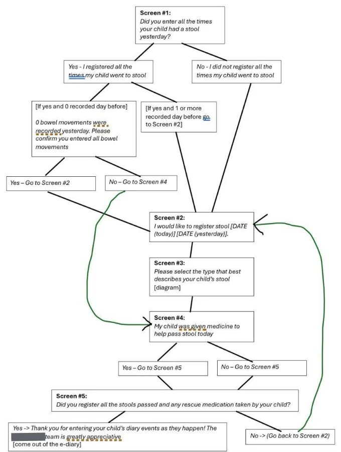
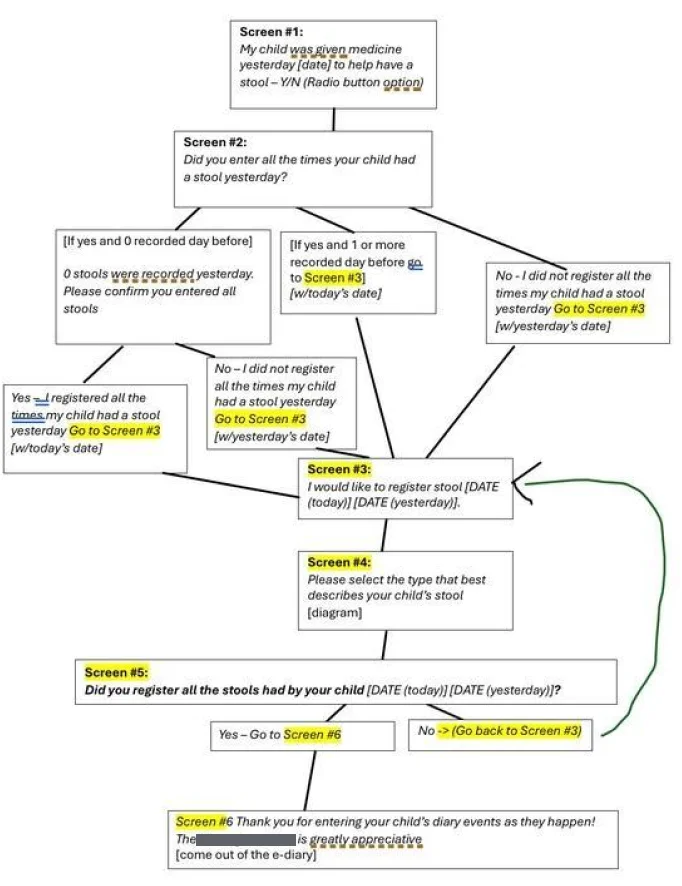

Product design · Web app
Details generalized for confidentialityChild health metrics app

(view full size)Outcome
A new version of a pediatric health metrics tracker was about to go into build with a confusing, data-corrupting question. It instead shipped with two simple, fit-for-purpose flows. Unnecessary steps were eliminated so caregivers of ill children could complete their routine logging with less effort. The client got cleaner data and confidence for a $amount withheldK expansion.
Problem
The client’s app had replaced paper for caregivers logging their children’s bowel movements, a key measure for the client’s investigational medicine. We had finished designing an updated version and were set to build when the client added a medication-use question. The new request carried two risks. The first was user confusion, because the medication question was to be answered once a night, but caregivers were expected to complete the stool tracker multiple times each day. The second was imprecise data, because a single confirmation asked about medication and stools together, preventing a statistician from telling the responses apart. A fix was needed before user acceptance testing, or the $amount withheldM project faced expensive rework and delay. The client hadn’t yet seen the conflict with their own end goal.
My role
I bridged the client and the build by aligning the design with how caregivers would actually use the app, optimizing the flow for efficiency, and co-creating with the client and our internal teams. A solutions architect wrote requirements, product delivery engineers built, and clinical advisors addressed compliance and medical data use.
Constraints
Five factors bounded what a fix could look like.
| Constraint | What it meant |
|---|---|
| The client needed a medication question, but not in the way they requested | Keep the medication-use question, change how it’s asked |
| Engineers confirmed the user issue and flagged data inconsistencies | The design couldn’t be built as specified |
| The clinical team advised on what data the client required | The client’s needs, not the current design, set the scope |
| The direction came from the client, and it would have caused errors | The solution had to be one the client arrived at |
| Everything had to be resolved before UAT | Fix it now or face rework, delay, and costs |
Guiding principle
Ask what the data is for before designing how to collect it.
My first attempt to resolve the issue was to prompt self-discovery by the client. I asked them open-ended questions about how their request would work in practice, such as “How would data be reconciled if a caregiver answers YES and then NO, referring to the same day?” Their answers showed they didn’t yet recognize the incompatibility.
My second attempt was to use flow diagrams. I diagrammed the flow the way a solutions architect had once walked me through a specification. Now the client could picture a user moving through their instructions. The problem I’d described became real, and the client became invested in solving it.
Then we hit a new problem. Every attempt to fix the design made the flow more complicated. After much back-and-forth, the flow was snarled even though the obstacle was visible to everyone: the medication question now sat first, asking about yesterday.


(view full size)I went back to basics. What did the client need to collect, what didn’t they need, and why? I confirmed there were no technical or clinical limitations on splitting the task in two. The client needed one yes-or-no answer about medication per day regardless of the stool count, with details only when the answer is yes. As the client put it, “We would like to know in a given day if the child was given medicine to pass stool irrespective of the number passed.” The client agreed that two simplified flows, one for medication use and one for stools, would be less of a burden on caregivers.
Uncoupling the flows made the task easier for caregivers and improved data integrity at the same time. Learning what data the client needed, and why, is what made a good solution possible.
Cleaner data gave the client confidence in a $amount withheldK expansion, and the diagrams gave them confidence in the decisions they made with us.
Learning
Next time, I’d start with the diagram. My initial attempt at a fix was unproductive, with open-ended questions that failed to help the client discover the issue themselves. The diagram did in one discussion what abstract clarification questions couldn’t in several.